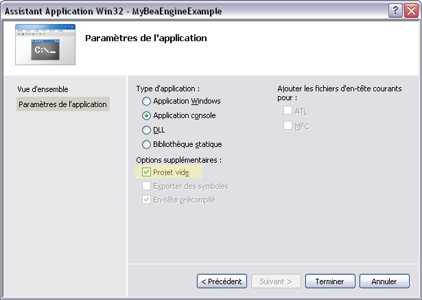
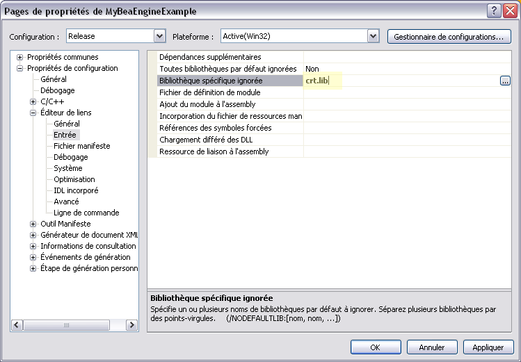
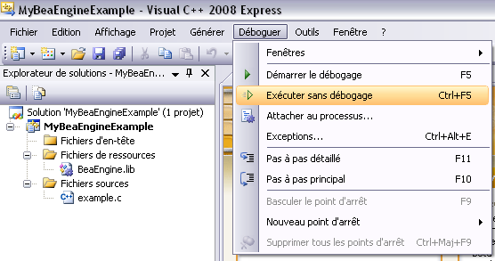

Compiler un exemple avec Visual Studio 2008
Je vous expose ici la démarche à suivre pour compiler (à l'aide de Visual Studio 2008 Express Edition) sans encombre un exemple qui utilise BeaEngine. Cette explication est issue d'une discussion avec Bruce que je remercie pour les retours très utiles.
1. Créer un nouveau projet
Commencez par créer un nouveau projet en choisissant : Fichier, Nouveau, Projet. Vous obtenez alors une nouvelle fenêtre comme celle-ci :

Saisissez le nom du projet et choisissez une Application Win32 console.
2. Assistant Application
Vous obtenez alors la fenêtre Assistant Application comme ci-dessous. Choisissez "Projet Vide".

3. Ajouter le fichier source
Dans la fenêtre de gauche "Explorateur de solutions", vous voyez apparaître notre nouveau projet. Faites un click droit sur "Fichiers sources" et choisissez d'ajouter un élément existant. Choisissez alors l'un des fichiers sources proposés dans les exemples d'utilisation de BeaEngine.

4. Ajouter la bibliothèque BeaEngine
Ajoutez maintenant le fichier BeaEngine.lib en appliquant la même démarche sur le sous dossier "Fichiers de ressources".

5. Tentez la compilation
Si vous tenez de générer l'exemple en selectionnant : Générer, Générer l'application, vous obtenez le log d'erreur suivant :

6. Ajouter crt.lib
Pour corriger cette erreur, il suffit d'ajouter la bibliothèque crt.lib au projet. Selectionnez : Projet, propriétés. vous obtenez la fenêtre suivante. Dans la rubrique "Editeur de liens", "Entrée", modifiez l'entrée "Bibliothèque spécifique ignorée" en saisissant crt.lib

7. Compilez !
Refaites une génération de projet et normalement, tout se passe correctement. Vous pouvez alors lancer l'exécutable obtenu :
